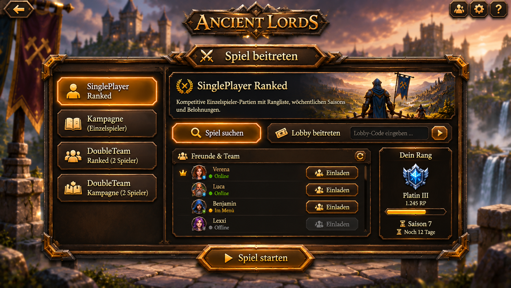

Spielmodi
Die Menü- und Matchmaking-Struktur soll mehrere Einstiegssituationen abdecken: Solo, Koop, kompetitiv und narrativ.

Aktuell vorgesehene Modi
- SinglePlayer Ranked
- Kampagne
- DoubleTeam Ranked
- DoubleTeam Kampagne
UX-Ziele
- Schnell erkennbarer gewählter Modus
- Freundesliste und Einladung direkt im Beitreten-Bildschirm
- Option auf öffentliche Spielsuche oder Lobbycode
- Klare Trennung zwischen Solo- und Teamkontext
Im Koop scheiden beide Mitspieler aus, sobald eines ihrer Hauptgebäude fällt. Im gewerteten 2:2 verliert das betroffene Zweierteam in diesem Moment gemeinsam. Ob Glaubensverlust dieselbe Teamfolge hat, bleibt offen. Start und Ende der Partie